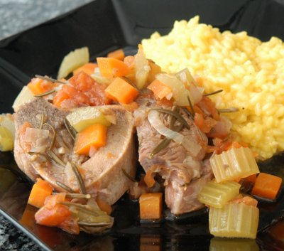

| Zutaten für 4 Portionen: | |
| 4 Stück | Kalbshaxen (4-5 cm dick) |
| Salz, Pfeffer | |
| 2 El | Mehl |
| 2 | Zwiebeln |
| 1 grosse oder 5 kleine | Karotten |
| 2 | Knoblauchzehen |
| 2 Stangen | Sellerie |
| 2 Zweige | Thymian |
| 3 | Tomaten |
| 25 g | Butter |
| 3 El | Olivenöl |
| Zitronenschale | |
| 3 dl | trockener Weisswein |
| 3 dl | Kalbsfond |
| Loorbeerblatt | |
| 2 Zweige | Rosmarin oder Majoran |
Die Kalbshaxen aussen einschneiden damit sich das Fleisch nicht wegkrümmt beim kochen.
Mit Salz und Pfeffer würzen und bemehlen.
Zwiebeln fein schneiden. Karotten schälen und fein schneiden. Knoblauchzehen ganz fein hacken. Sellerie klein schneiden und Thymian auch fein schneiden. Den Rosmarin aber ganz lassen.
Tomaten an der Basis kreuzweise einschneiden und für ein paar Minuten in heisses Wasser einlegen. Die Haut nachher abziehen. Die Tomaten ohne Kerne in kleine Würfel schneiden.
Butter mit Olivenöl schmelzen und das Fleisch kurz anbraten.
Zwiebeln, Karotten, Knoblauch, Sellerie, Tomaten, Thymian und Zitronenschale beigeben und ein paar Minuten braten.
Wein und Fond zugeben und leicht köcheln. Loorbeerblatt beigeben. Deckel darauf geben und 90 Minuten schmoren. (Oder 20 Minuten im Dampfkochtopf auf dem zweiten Ring). Das Fleisch sollte sich selber vom Knochen lösen. Falls die Sauce zu dick wird, mit ein paar Esslöffeln Fond verdünnen.
Falls die Sauce zu dünn ausfällt 15 Gramm Butter zugeben und 1/2 Esslöffel Mehl.
Die Sauce kann mit dem Handmixer püriert werden.
Rosmarin hacken und über das Gericht geben.
Mit Risotto Milanese servieren.
Pamphlet of the ESA
Tasted very nice on 5.5.2007. I cooked the dish for 30 minutes in the pressure cooker on the second ring. The meat was delicious but was falling off the bone. So I suggest 20 minutes next time. RE
Prepared again for a tastier photo. The Keller sisters loved the dish which was very nice. RE 13.3.2010